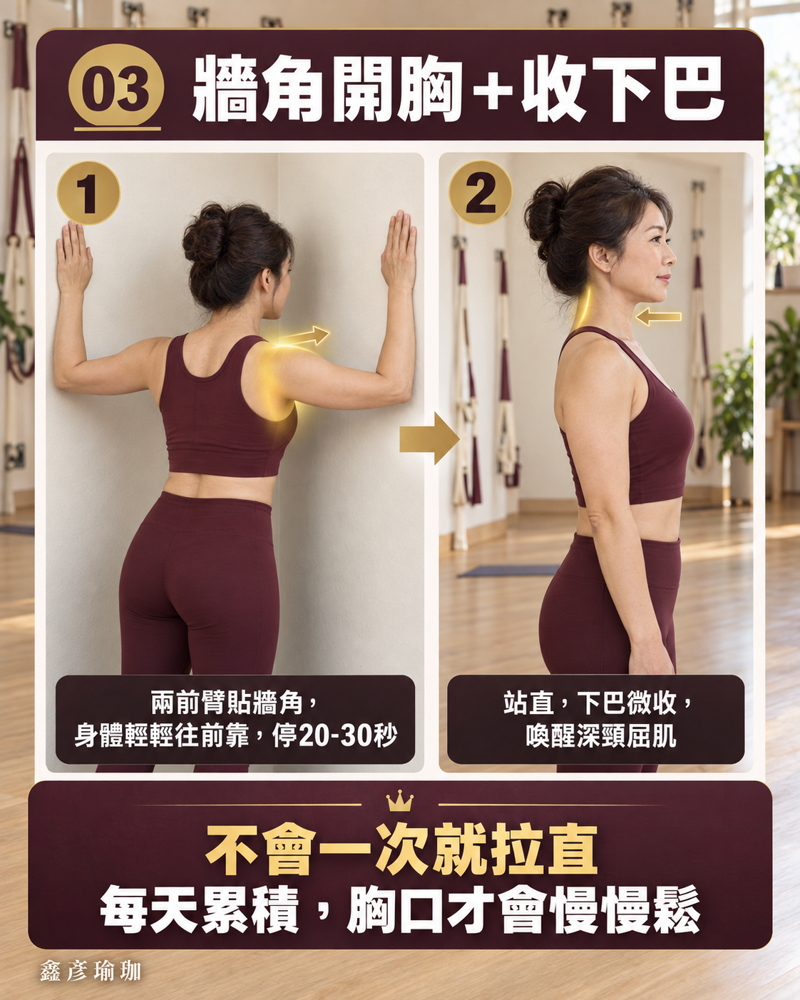

圓肩駝背，先鬆哪裡、先練哪裡？
- 改善圓肩駝背最常見的失敗原因不是不夠努力，而是「順序反了」——該鬆的前胸沒放開，硬練夾背只會引發嚴重的上斜方肌聳肩代償。
- 人體神經具有「交互抑制」機制：前側胸小肌、胸大肌過度緊繃，後背菱形肌與下斜方肌就會被強制關機、使不上力。
- 黃金順序三步走：先「鬆」前胸縮短肌群，再「喚醒」深層沉睡肌群（前鋸肌、下斜方肌、深頸屈肌），最後進行全身動力鏈「整合」。
- 壁繩瑜伽能利用重力懸掛提供安全支點，在不聳肩的前提下深度打開胸廓，重置肩胛骨自然滑動節律。
現代人每天坐在辦公桌前打字、滑手機、開車，雙手幾乎一整天都在身體前方作業。久而久之，鏡子裡的自己肩膀越來越往前捲、背部越來越厚實隆起，甚至穿衣服時領口總是往前吊。許多人意識到體態走樣，立刻上網搜尋「改善駝背運動」，買了彈力帶開始拚命做划船、瘋狂用力夾背；然而幾週過去，駝背不但沒有消失，反而脖子兩側越來越粗壯緊繃，肩膀甚至開始發出卡卡聲。要破解圓肩駝背，你必須先看懂人體解剖學中最關鍵的「順序邏輯」。
肌肉拔河賽：前胸與後背的失衡真相
人體的肩胛骨懸浮在胸廓後方，它沒有任何堅硬的骨性關節把它死死固定在胸壁上，完全仰賴周圍十幾條肌肉的張力平衡來維持穩定。圓肩駝背本質上就是一場「肌肉張力拔河賽的徹底失衡」：

- 前胸繩索（過緊、強勢縮短）：包含胸大肌、胸小肌、前三角肌與闊背肌。整天向前打字讓這群肌肉持續縮短痙攣，像縮水的橡皮筋死命把肩胛骨向前、向下傾倒拉扯。
- 後背繩索（過弱、神經抑制）：包含菱形肌、中下斜方肌與前鋸肌。這群負責把肩胛骨向後收攏、貼平胸壁的肌肉，被前胸強大的拉力長年死死拖住，處於被拉長的「神經交互抑制（Reciprocal Inhibition）」狀態，漸漸陷入肌肉失憶。
為什麼「直接練夾背」會越練越糟？
很多人問：「既然背部太弱，那我直接練背、用力夾緊肩胛骨不對嗎？」
這正是運動力學上最常見的致命陷阱！當前側的胸小肌像生鏽的鐵鎖把肩胛骨卡在前方時，肩胛骨根本沒有正常的活動空間向後滑動。這時大腦強行命令「夾背」，深層無力的菱形肌與下斜方肌依舊無法啟動，身體為了完成動作，只能調派周圍最強壯、最容易被徵召的「上斜方肌（肩頸交界肌肉）」與「提肩胛肌」跳出來暴力代償！
結果就是：每一次夾背，都在加劇聳肩；每一次訓練，都在把上斜方肌練得越來越肥大厚實，脖子越來越短，而前傾的圓肩卻紋絲未動。
黃金三步驟：先「鬆」、後「練」、再「整合」
符合人體運動學的體態調整，必須嚴格遵守層次分明的先後次序：
| 階段 | 核心任務 | 主要目標肌群 | 達成目的 |
|---|---|---|---|
| 第一步：鬆（Release） | 筋膜減張、騰出關節滑動空間 | 胸小肌、胸大肌、闊背肌、肩胛下肌、胸椎關節囊 | 解開前側枷鎖，讓向前翻倒的肩胛骨重獲向後復位的生理空間 |
| 第二步：練（Activate） | 神經肌肉重塑、喚醒沉睡肌群 | 下斜方肌、前鋸肌、菱形肌、深層頸屈肌 | 重建肩胛骨下沉與後收的微小穩定力量，禁止上斜方肌聳肩代償 |
| 第三步：整合（Integrate） | 全身動力鏈對齊、養成自然預設 | 骨盆核心、橫膈膜呼吸、頸椎頭部對位 | 讓挺拔成為大腦不需費力監控的潛意識自動化習慣 |
居家安全實作：牆角開胸與深頸啟動
如果想在日常開始第一步，可以先從最溫和的居家練習做起：

- 牆角溫和開胸（先鬆前胸）：面對一個乾淨的房間牆角，雙腳呈微弓箭步站穩。將雙側前臂貼在兩側牆面上，手肘高度約與肩膀等高（或略高於肩膀）。身體重心慢慢往前傾，感受胸大肌與胸小肌深處被溫柔地展開，維持 20 至 30 秒穩定呼吸，切記不要過度挺腰塌背。
- 雙下巴微收引導（啟動深頸屈肌）：放鬆雙肩，雙眼平視前方，想像後腦勺沿著水平軌道向後平移一公分（像做出雙下巴的感覺），停留 3 秒再放鬆，重複 5 至 8 次。這個動作能切斷頭前傾對胸廓的牽拉。
壁繩瑜伽如何落實精準的「先鬆後練」？
在徒手練習中，練習者往往很難自我感知到底有沒有在聳肩代償；而壁繩瑜伽（Wall Rope Yoga）正是為了破解這項力學難題而設計：
- 無重力懸掛開胸：藉由牆面骨盆繩與胸帶的支持，練習者可以將身體部分體重交付給繩索。在完全不需要下背與頸椎出力的安全保護下，利用地心引力深度延展胸廓深層筋膜，解開多年深鎖的胸小肌。
- 提供本體感覺反饋支點：牆面與拉力繩帶形成清晰的力線軌道，老師在旁邊能即時觀察練習者肩胛骨的旋轉角度，引導下斜方肌與前鋸肌精準發力，確保每一個動作都在安全合規的生理軌道上進行。
必須尋求專科醫師鑑別的紅旗警訊
若圓肩駝背伴隨以下任何異常狀況，請優先掛號神經內科、骨科或復健科專科門診：
- 胸廓出口症候群（TOS）警訊：抬高手臂時，手部產生麻木、刺痛、發白或脈搏消失（代表緊繃的胸小肌已壓迫到臂神經叢或鎖骨下血管）。
- 脊椎結構性病變：上背部脊椎在完全平躺放鬆時依然隆起如駝峰、無法被動壓平，且伴隨劇烈骨痛（需排除舒爾曼病 Scheuermann's disease 或骨質疏鬆壓迫性骨折）。
- 伴隨呼吸困難：嚴重的胸椎後凸導致胸廓容量大幅縮小，平地慢走即感到胸悶氣喘。
理清順序，讓體態調整事半功倍
不想再盲目做無效夾背操了嗎？預約現場 AI 體態檢測，透過全身力學角度分析看清肩胛前傾與胸椎活動度，由專業老師為您量身規劃合適的先鬆後練路徑。
預約首次 NT$299 AI 體態檢測本文為肩胛胸廓結構與肌群運動力學衛教知識分享，並非醫療行為，亦不提供任何醫療診斷或療效承諾。若有手臂神經麻木、劇烈胸背疼痛、關節骨骼畸形或呼吸困難，請務必諮詢骨科、神經內外科或復健專科醫師。
常見問題
為什麼練了網路上的「夾背操」，圓肩沒改善，反而脖子更緊、背更厚？
因為順序徹底搞反了。當前側的胸小肌與胸大肌如同緊繃鋼索把肩膀往前鎖死時，後背的菱形肌與下斜方肌處於被動拉長與「神經交互抑制」狀態，根本使不上力。此時硬做夾背動作，大腦只能調動最強勢、最容易出力的「上斜方肌與提肩胛肌」猛力代償，結果就是越夾越聳肩、脖子根部肌肉越練越粗厚，圓肩依然故我。
改善圓肩駝背的正確黃金順序到底是什麼？
絕對是「先鬆、後喚醒、再整合」：第一步「鬆」，必須先放鬆前胸太過強勢縮短的胸小肌、胸大肌、闊背肌與肩胛下肌，先把關節活動空間還給肩胛骨；第二步「喚醒」，重新激活被抑制沉睡的前鋸肌、下斜方肌與菱形肌；第三步「整合」，將頭部中立與骨盆核心對齊，建立全新不費力的日常動態反射。
胸小肌在圓肩駝背中扮演什麼關鍵角色？
胸小肌起自第 3 至第 5 肋骨，向上止於肩胛骨的喙突（Coracoid Process）。當胸小肌長期短縮痙攣時，會像一條向下拉緊的韁繩，直接把肩胛骨向前、向下傾倒（Anterior Tilt），使手臂骨頭（肱骨頭）被硬往前推，並大幅壓縮肩峰下空間，成為圓肩駝背與肩膀夾擠疼痛的核心罪魁禍首。
壁繩瑜伽如何落實「先鬆後練」的力學邏輯？
在壁繩練習中，繩帶懸掛提供完全可靠的外部支撐點，讓練習者在「放鬆無重力」狀態下，深度打開腋下前胸深層肌筋膜；接著藉由身體角度傾斜的漸進阻力，引導後背下斜方肌與前鋸肌精準出力收縮，由老師當面校準軌跡，確保練習全程零代償。
出現哪些伴隨圓肩駝背的症狀時，必須立即就醫？
若伴隨單側或雙側手臂放射性觸電麻痛、手指抓握無力（如拿不住筆或筷子）；手臂高舉過頭時脈搏減弱、手掌發白發冰（胸廓出口症候群 TOS 血管神經壓迫警訊）；或上背部出現持續性非機械性劇烈刺痛且伴隨發燒，請務必立即前往神經專科、骨科或復健科就醫。